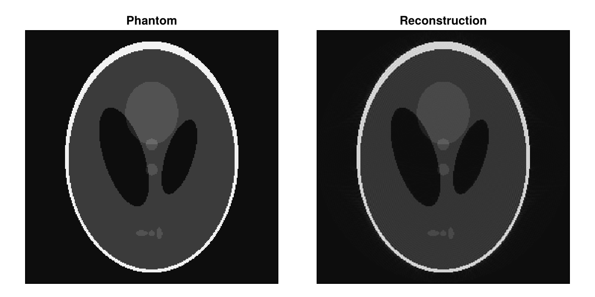

Getting Started
Installation
MRIReco.jl requires Julia 1.10 or newer. Install the main package with
using Pkg
Pkg.add("MRIReco")using MRIReco also loads MRIBase, MRIOperators and RegularizedLeastSquares.jl, which provides the solvers. The other packages are installed in the same way when you need them, for example Pkg.add("MRIFiles") to read raw data files. The examples in this documentation also use CairoMakie for plots and ImageUtils for test images.
A First Reconstruction
This example simulates k-space data of a Shepp-Logan phantom along a radial trajectory and reconstructs an image from it. Besides MRIReco it needs MRISimulation, ImageUtils and CairoMakie.
using MRIReco, MRISimulation, CairoMakie
using ImageUtils: shepp_logan
N = 256
phantom = shepp_logan(N)
params = Dict{Symbol, Any}()
params[:simulation] = "fast"
params[:trajName] = "Radial"
params[:numProfiles] = floor(Int64, pi/2 * N)
params[:numSamplingPerProfile] = 2N
acqData = simulation(phantom, params)acqData is an AcquisitionData object that holds the simulated k-space data together with the trajectory. A direct reconstruction applies the adjoint of the Fourier encoding to the density-compensated data:
params = Dict{Symbol, Any}()
params[:reco] = "direct"
params[:reconSize] = (N, N)
image = reconstruction(acqData, params)
size(image)(256, 256, 1, 1, 1, 1)The reconstructed image always has six dimensions: x, y, z, echoes, coils and repetitions. Here only the first two have more than one entry:
fig = Figure(size = (700, 350))
for (i, (data, title)) in enumerate(((phantom, "Phantom"), (abs.(image[:, :, 1, 1, 1, 1]), "Reconstruction")))
ax = Axis(fig[1, i], aspect = DataAspect(), yreversed = true, title = title)
heatmap!(ax, data', colormap = :grays)
hidedecorations!(ax)
end
fig
Next Steps
- The tutorials walk through complete reconstructions step by step.
- The how-to guides show how to solve specific tasks, such as binning profiles or extracting Cartesian k-space data.
- The API reference lists the functions and types of each package.